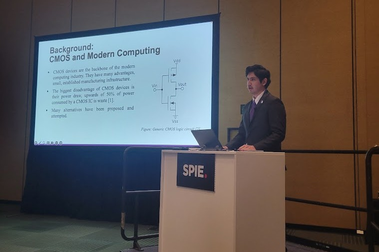
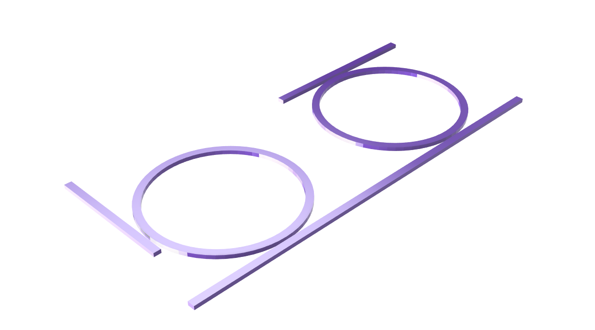
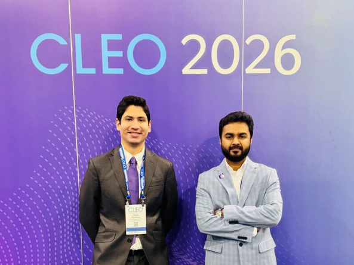
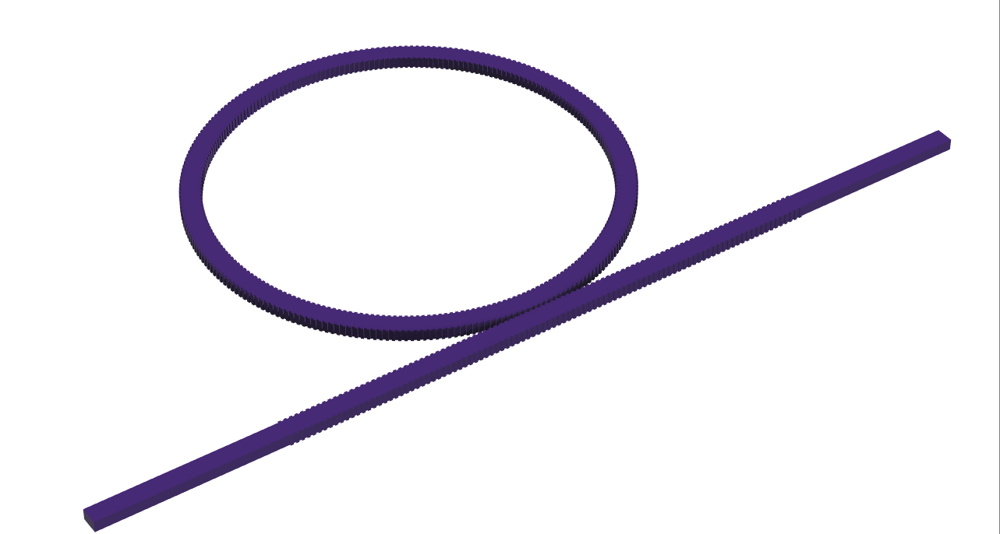
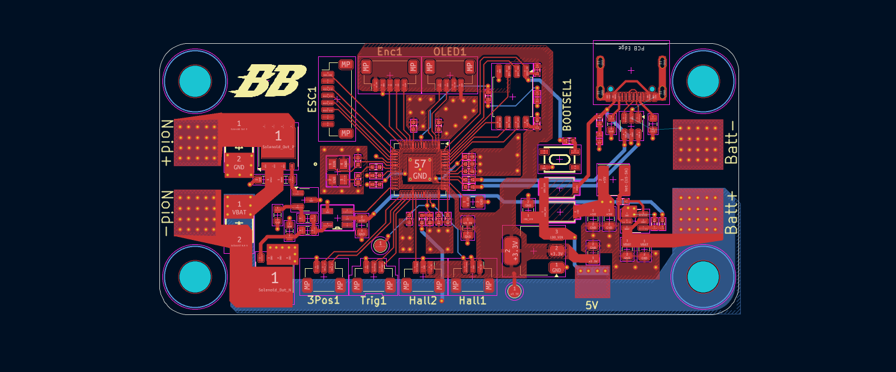
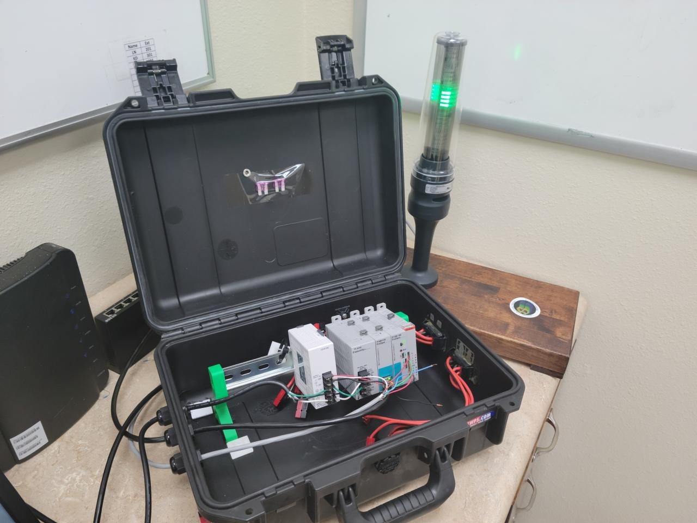
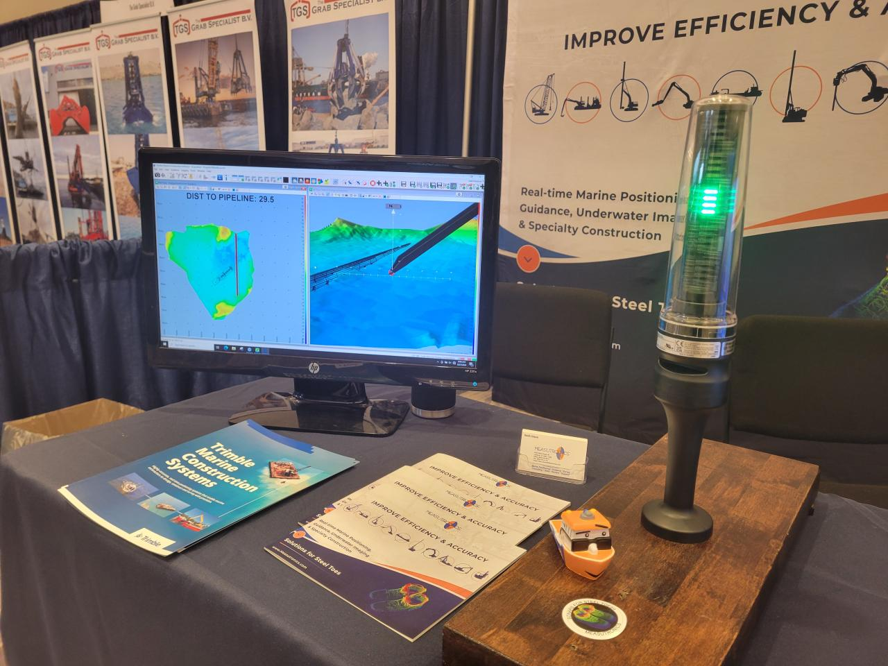
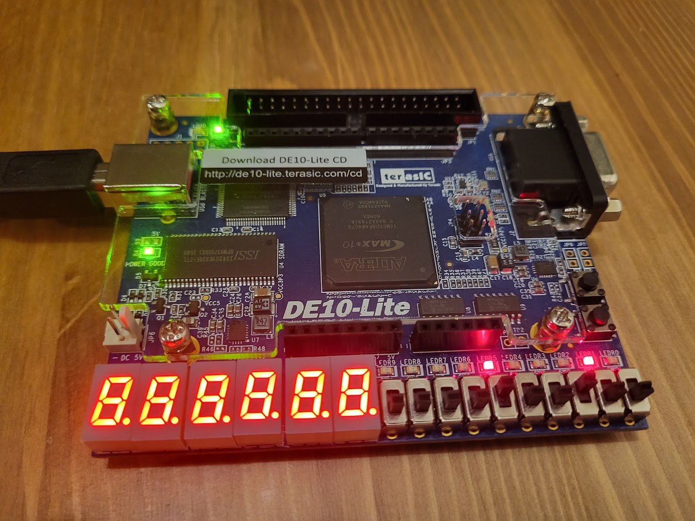
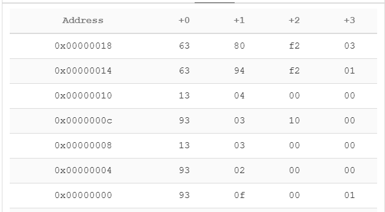

Featured work
All-Optical Ring Resonator Logic Gates
All-optical logic gates are a promising solution for overcoming the speed, bandwidth, and power limitations of electronic computing architectures. Here, we report a compact, fully passive, and CMOS-compatible all-optical logic platform based on cascadable silicon photonic ring resonator inverters.


Design and Fabrication of a Subwavelength-engineered Silicon Photonic Moiré Ring Resonator
We demonstrate a subwavelength-engineered silicon photonic moiré ring resonator with high-Q whispering-gallery behavior and low modal volume. Width-modulated sidewalls induce azimuthal perturbation enabling tunable spectra, mode splitting, and localized resonances for filtering, nonlinear optics, and optical computing.


Custom 3D Printed Nerf Blaster "Warthog"
Designed a 4-layer printed circuit board in KiCad, incorporating an RP2040 to drive an electronic speed controller for two brushless motors, with a fast decay circuit for a solenoid pusher for fire rates up to 25 darts per second. Purpose-built firmware (C++) for general operation, motor PID tuning, reconfigurable user profile settings, memory management, and an I2C OLED screen for user interaction and system feedback.


StackLite Alarm System
This was a summer internship project. The concept was a hardware extension of a software alarm for a dredging software. The idea was to provide an early warning system to dredge operators before the vehicles they operated (and the tools attached) neared a specified exclusion zone, the data of which came from RTK antennas. I successfully created the prototype for this safety device, where the system would receive the data via Ethernet and calculate the real-time distance between the tool and the exclusion zone, and warn accordingly. A video of this demonstration was posted on my LinkedIn.


RISC-V 32I Processor
A single-core RISC-V 32I Processor coded with Verilog & SystemVerilog on the DE-10 Lite FPGA. A purpose written assembly program recursively calculates the Fibonacci sequence for 16 iterations using 10 implemented arithmetic and branch logic instructions.

